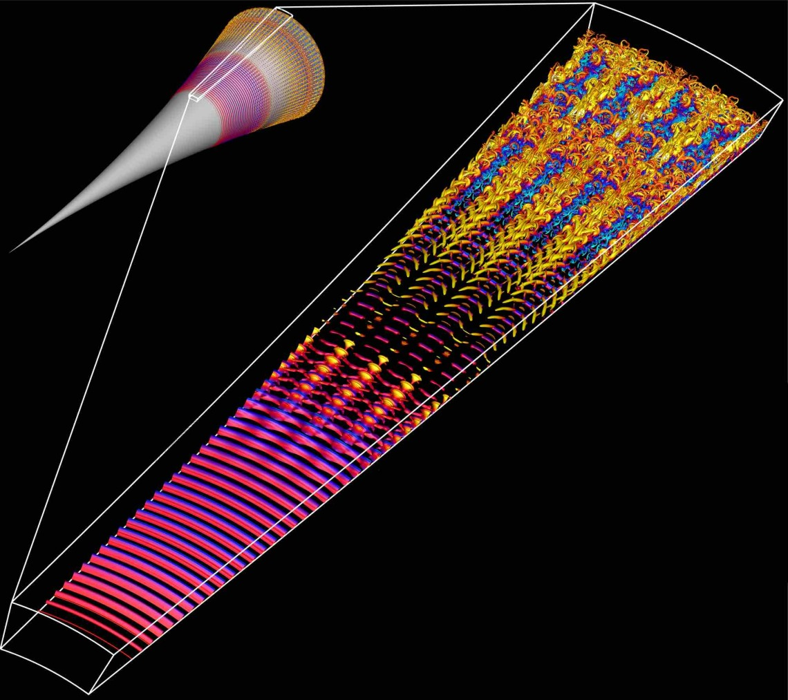

Welcome to the UArizona HPC Documentation Site

Introduction
The University of Arizona offers High Performance Computing (HPC) resources in the Research Data Center (RDC), a state-of-the-art facility that hosts our large computer clusters. HPC services are available at no cost to researchers. Each faculty member is eligible for a free standard allocation of CPU time and storage space.
This documentation site provides technical details relevant to using our HPC system. Whether you are just starting your journey into computational sciences or are a seasoned programmer, we hope you will find something useful in these pages. This site is managed by the HPC Consult team. Please contact us if you have questions or comments about the content of this site.
Featured Links
If you are an active UArizona affiliate (e.g. student, post-doc, faculty), you can register an account. If you are not affiliated with UArizona but are working with collaborators here, you can register as a Designated Campus Colleague (DCC).
If you are new to the UArizona HPC, or to HPC in general, our self-guided quick start tutorial will provide a solid foundation for using our system.
Find out how to contact the HPC Consult team, or view our FAQs, glossary, cheat sheets, and more!
Events Calendar | Workshop Materials
Every semester we host training sessions on topics including intro to HPC, machine learning, parallel computing, and beyond. Click the link above to see our workshop schedule, our old training materials, and find more workshops from around campus.
Available Resources
Our Clusters (click to expand)
Implemented in the middle of 2020, Puma is the biggest cat yet. Similar to Ocelote, it has standard CPU nodes (with 94 cores and 512 GB of memory per node), GPU nodes (with Nvidia V100) and two high-memory nodes (3 TB). Local scratch storage increased to ~1.4 TB. Puma runs on CentOS 7.
As is the case for our other supercomputers, we use the RFP process to get the best value for our financial resources, that meet our technical requirements. This time Penguin Computing one with AMD processors. This is tremendously valuable as each node comes with:
- Two AMD Zen2 48 core processors
- 512GB RAM
- 25Gb path to storage
- 25Gb path to other nodes for MPI
- 2TB internal NVME disk (largely available as /tmp)
- Qumulo all flash storage array for shared filesystems
- Two large memory nodes with 3TB memory and the same processors and memory as the other nodes
- Six nodes with four Nvidia V100S GPU's each
Ocelote arrived in 2016. Lenovo's Nextscale M5 technology was the winner of the RFP mainly on price, performance and meeting our specific requirements. Ocelote has one large memory node with 2TB of memory and 46 nodes with Nvidia P100 GPUs for GPU-accelerated workflows. This cluster is actually the next generation of the IBM cluster we call El Gato. Lenovo purchased IBM's Intel server line in 2015.
In 2021, Ocelote's operating system was upgraded from CentOS6 to CentOS7 and was configured to use SLURM, like Puma. It will continue until it is either too expensive to maintain or it is replaced by something else. - Intel Haswell V3 28 core processors - 192GB RAM per node - FDR infiniband for fast MPI interconnect - Qumulo all flash storage array (all HPC storage is integrated into one array) - One large memory node with 2TB RAM, Intel Ivy Bridge V2 48 cores - 46 nodes with Nvidia P100 GPU's
Implemented at the start of 2014, El Gato has been reprovisioned with CentOS 7 and new compilers and libraries. From July 2021 it has been using Slurm for job submission. El Gato is our smallest cluster with 130 standard nodes each with 16 CPUs. Purchased by an NSF MRI grant by researchers in Astronomy and SISTA.
Compute
UArizona HPC systems are available to all university faculty, staff, undergraduate and graduate students, postdocs, and designated campus colleagues (DCCs) at no cost. Researchers have access to compute resources on our three clusters Puma, Ocelote, and El Gato located in our data center. Presently each research group is provided with a free standard monthly allocation on each: 100,000 CPU-hours on Puma, 70,000 CPU-hours on Ocelote, and 7,000 CPU-hours on El Gato.
Funding Sources
UArizona HPC systems are funded through the UArizona Research Office (RII) and CIO/UITS (Chief Information Officer, and University Information Technology Services). Staff is funded to administer the systems and provide consulting services (no charge) for all researchers.
Regulated Research
These resources specifically do not support Regulated Research, which might be ITAR, HIPAA or CUI (Controlled Unclassified Information). For more information on services that can support regulated research, see: HIPAA support services and CUI support services.
News
-
New Ocelote GPUs
We recently added 22 new P100 GPUs to Ocelote. Need to request multiple GPUs on a node and you're finding Puma queue times too slow? You can now request two GPUs per node on Ocelote using
--gres=gpu:2. -
New HPC Documentation!
Have you seen our shiny new documentation website? If not, check out, well, this page! The content is the same as the Confluence site you're used to, but (we hope) better organized, easier to navigate, and faster. Have suggestions? Let us know!
-
New MIG Resources
MIG resources entered the queues on Feb 26, 2024. The 12 MIG GPUs will increase overall GPU availability on Puma by freeing the 32 GB V100 GPUs for users requiring larger amounts of GPU memory. Note: some batch scripts will need updates to work properly. More information here.
-
Increased Allocations
Beginning on March 1st, 2024 the standard allocation of CPU hours on Puma has increased from 100,000 to 150,000, and on Ocelote from 70,000 to 100,000.
Highlighted Research
Reconstructing the History of the Solar System Using HPC
Erik Asphaugs Planetary Formation Lab in the Lunar and Planetary Laboratory uses smoothed-particle hydrodynamics (SPH) simulations to explore how collisions between bodies in the Solar System shape its evolution through time. These three-dimensional simulations, which approximate planetary bodies as collections of particles, incorporate realistic geologic properties to track their structural and thermal changes during and after giant impacts. From Eric: The access to increased time allocations as well as large volumes of temporary storage on xdisk provided by the HPC has revolutionized our ability to run our most complex simulations at high resolution, with enough space and time to explore the full parameter space necessary to make key discoveries that inform our understanding of Solar System evolution.
One of their major projects has occupied a large fraction of their HPC hours and storage: the capture of Plutos moon, Charon, from a giant impact early in the Solar Systems history. High resolution is also critical to track detailed interactions between Pluto and Charon, including any material transferred between them. Without the HPC and the allocation of computation time and storage space, they would not have been able to run the hundreds of models necessary to successfully reproduce systems that look similar to Pluto and Charon today. The models have revealed new insights about how bodies like Pluto capture satellites: the dwarf planet and its proto-satellite collide, briefly merge, and then re-separate as Charon slow begins to move outward. They call this new process, which significantly redefines our understanding of giant collisions, kiss and capture. An example kiss-and-capture is shown in the image above. The simulation shown covers 60 hours of model time, which takes ~1.5 months on the HPC. The ability to run such long simulations in parallel was crucial to completing this work.
Sylvia Sullivan is an Assistant Professor in Chemical and Environmental Engineering who performs atmospherically related research and has a joint appointment to the Department of Hydrology and Atmospheric Sciences. Her academic background is in chemical engineering, but she has picked up atmospheric science and computing skills along the way to model and understand cloud and storm systems. I really liked environmental work because I felt it was very impactful, she says. Her research includes investigating cloud ice formation. From a chemical engineering perspective, you can think about clouds as a control volume, flows in and out and phase changes occurring inside. Along with this more technical view, Sylvia says she fell in love with clouds because they are very beautiful and poetic. This blend of fields brought her to the University of Arizona as it is one of the only Universities where Chemical and Environmental Engineering are in the same department. And besides, Tucson is a wonderful location.
She is building a research group to study the impact of ice clouds, particularly their energetic and precipitation effects. Sylvias group runs very high-resolution simulations called storm resolving simulations, where the meshes are fine enough to represent individual storms. In global climate models, the mesh has a resolution on the order of 100 km, in which several storm cells can form simultaneously. These storm-resolving computations are very expensive and produce terabytes of data, which then need to be post-processed and visualized. Currently, Sylvia and her group are very focused on working with other visualization experts on campus to illustrate the structures and evolution of clouds and storm systems.
Faster Speeds Need Faster Computation

Professors Christoph Hader, Hermann Fasel, and their team are exploring the use of our GPUs to optimize Navier-Stokes codes for simulating the flow field around hypersonic vehicles traveling at size times the speed of sound (Mach 6) or more.
In the image to the right, instantaneous flow structures obtained from a DNS for a flared cone at Mach 6 are visualized using the Q-isocontours colored with instantaneous temperature disturbance values. The small scales towards the end of the computational domain indicate the regions where the boundary layer is turbulent.
Acknowledgements
Published research that utilized UArizona HPC resources should follow our guidelines on how to acknowledge us.
If you wish for your research to be featured in our Results page, please contact HPC consult with news of the publication!
We respectfully acknowledge the University of Arizona is on the land and territories of Indigenous peoples. Today, Arizona is home to 22 federally recognized tribes, with Tucson being home to the Oodham and the Yaqui. Committed to diversity and inclusion, the University strives to build sustainable relationships with sovereign Native Nations and Indigenous communities through education offerings, partnerships, and community service.